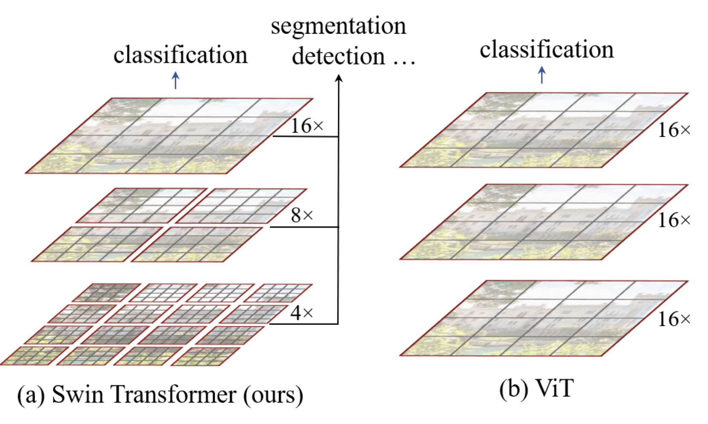

Swin Transformer#
Ce notebook analyse l’article Swin Transformer: Hierarchical Vision Transformer using Shifted Windows. Il propose une amélioration de l’architecture transformer avec un design hiérarchique adapté aux images, rappelant les réseaux de neurones convolutifs. La première partie du notebook explique les propositions de l’article une par une. La seconde partie présente une implémentation simplifiée de l’architecture.
Analyse de l’article#
L’idée principale de l’article est d’appliquer l’attention de manière hiérarchique sur des parties de plus en plus grandes de l’image. Cette approche repose sur plusieurs fondements :
L’analyse des images commence par les détails locaux avant de considérer les relations entre tous les pixels. C’est pourquoi les CNNs sont si performants.
Le fait que les tokens (patch) ne communiquent pas avec tous les autres permet d’améliorer le temps de calcul.
Architecture hiérarchique#
L’architecture hiérarchique du swin transformer est résumée dans cette figure :

Dans notre implémentation, le modèle ViT convertit les patchs en tokens et applique un transformer encoder sur tous les éléments. C’est une architecture simple et sans biais sur les données, applicable à divers types de données.
L’architecture swin ajoute un biais pour la rendre plus performante sur les images et plus rapide en traitement. Comme le montre la figure, l’image est d’abord divisée en petits patchs (taille \(4 \times 4\) dans l’article) regroupés en fenêtres. La couche d’attention est ensuite appliquée uniquement sur chaque fenêtre de manière indépendante. Plus on descend dans le réseau, plus la dimension C (taille des patchs relative à l’image) et des fenêtres augmente jusqu’à couvrir toute l’image, avec le même nombre de patchs que l’architecture ViT. À la manière d’un CNN, le réseau traite d’abord les informations locales, puis, au fur et à mesure (avec l’augmentation du receptive field), des informations de plus en plus globales. Cela se fait en augmentant le nombre de filtres et en diminuant la résolution de l’image.
Les nouveaux blocks de transformer correspondants sont appelés Window Multi-Head Self-Attention (W-MSA dans l’article, attention le M signifie Multi-Head et pas Masked).
Fenêtre glissante#
Dans leur analogie avec le CNN, les auteurs ont remarqué qu’il peut être problématique de séparer l’image en fenêtres à des positions arbitraires. Cela brise la connexion entre des pixels voisins situés aux extrémités des fenêtres.
Pour corriger ce problème, les auteurs proposent d’utiliser un système de fenêtre glissante (shifting window) dans chaque block swin. Les blocks swin sont agencés par paires comme décrit dans la figure du début du notebook.
Voici à quoi ressemble la fenêtre glissante :

Comme vous pouvez le constater, avec cette technique, on passe de \(2 \times 2\) patchs à \(3 \times 3\) patchs (de manière générale de \(n \times n\) patchs à \((n+1) \times (n+1)\)). Cela pose problème pour le traitement par le réseau, en particulier en batch.
Les auteurs proposent d’incorporer un cyclic shift qui consiste à faire cette opération sur l’image pour permettre un traitement plus efficace :

Notez que pour utiliser cette méthode, il est nécessaire de masquer les informations des patchs ne provenant pas d’une même partie de l’image. Les parties blanches, jaunes, vertes et bleues de la figure ne communiquent pas ensemble grâce à une couche d’attention masquée.
Relative position bias#
L’architecture ViT utilisait un position embedding absolu pour ajouter une information de position sur les différents patchs. Le problème de position embedding est qu’il ne capture pas les relations entre les patchs et est donc moins performant avec des images de résolutions différentes.
Le swin transformer utilise un biais de positions relatives pour compenser cela. Ce biais dépend de la distance relative entre les différents patchs. Il est ajouté lorsque l’attention est calculée entre deux patchs. Son principal intérêt est d’améliorer la capture des relations spatiales et de s’adapter à des images de résolutions différentes.
Détails supplémentaires sur l’architecture#
Comme on le voit sur la première figure du notebook, il y a plus de couches dans le stage 3 du swin transformer. Lorsqu’on augmente le nombre de couches du réseau, seules les couches du stage 3 sont augmentées, les autres restent fixes. Cela permet de bénéficier de l’architecture swin (shifting, etc.) tout en étant suffisamment profond et performant en termes de temps de traitement.
Supposons que chaque fenêtre contienne des patchs de \(M \times M\). La complexité computationnelle d’une couche multi-head self-attention (MSA) et celle d’une couche window multi-head self-attention (W-MSA) pour une image de \(h \times w\) patchs sont : \(\Omega(\text{MSA}) = 4hwC^2 + 2(h w)^2 C\) \(\Omega(\text{W-MSA}) = 4hwC^2 + 2M^2hwC\) Le premier est de complexité quadratique tandis que le second est linéaire si \(M\) est fixe. L’architecture swin permet de gagner en vitesse de traitement.
Implémentation simplifiée#
Passons maintenant à l’implémentation en PyTorch du swin transformer. Certaines parties sont assez complexes en termes d’implémentation et nous ne les couvrirons pas ici : la partie fenêtre glissante et la partie relative position bias. Nous allons donc nous contenter d’implémenter l’architecture hiérarchique.
Si vous souhaitez consulter l’implémentation complète du swin transformer par les auteurs, vous pouvez aller voir leur github. Notre implémentation s’inspire du code des auteurs et reprend notre implémentation du ViT.
import torch
import torch.nn as nn
import torch.nn.functional as F
import torchvision.transforms as T
import torchvision.datasets as datasets
import matplotlib.pyplot as plt
# Detection automatique du GPU
device = "cpu"
if torch.cuda.is_available():
device = "cuda"
print(f"using device: {device}")
/home/aquilae/anaconda3/envs/dev/lib/python3.11/site-packages/tqdm/auto.py:21: TqdmWarning: IProgress not found. Please update jupyter and ipywidgets. See https://ipywidgets.readthedocs.io/en/stable/user_install.html
from .autonotebook import tqdm as notebook_tqdm
using device: cuda
Conversion de l’image en patch#
Pour la conversion de l’image en patch, nous reprenons notre fonction du notebook précédent :
def image_to_patches(image, patch_size):
# On rajoute une dimension pour le batch
B,C,_,_ = image.shape
patches = image.unfold(2, patch_size, patch_size).unfold(3, patch_size, patch_size)
patches = patches.permute(0,2, 3, 1, 4, 5).contiguous()
patches = patches.view(B,-1, C, patch_size, patch_size)
patches_flat = patches.flatten(2, 4)
return patches_flat
Multi-head self-attention#
Dans l’implémentation du swin, la couche multi-head self-attention ne change pas par rapport à l’implémentation du ViT. C’est essentiellement la même couche, mais ce qui change est la manière de l’utiliser dans le swin block.
Reprenons donc notre code du notebook précédent :
class Head_enc(nn.Module):
""" Couche de self-attention unique """
def __init__(self, head_size,n_embd,dropout=0.2):
super().__init__()
self.key = nn.Linear(n_embd, head_size, bias=False)
self.query = nn.Linear(n_embd, head_size, bias=False)
self.value = nn.Linear(n_embd, head_size, bias=False)
self.dropout = nn.Dropout(dropout)
def forward(self, x):
B,T,C = x.shape
k = self.key(x) # (B,T,C)
q = self.query(x) # (B,T,C)
# Le * C**-0.5 correspond à la normalisation par la racine de head_size
wei = q @ k.transpose(-2,-1) * C**-0.5 # (B, T, C) @ (B, C, T) -> (B, T, T)
# On a supprimer le masquage du futur
wei = F.softmax(wei, dim=-1) # (B, T, T)
wei = self.dropout(wei)
v = self.value(x) # (B,T,C)
out = wei @ v # (B, T, T) @ (B, T, C) -> (B, T, C)
return out
class MultiHeadAttention(nn.Module):
""" Plusieurs couches de self attention en parallèle"""
def __init__(self, num_heads, head_size,n_embd,dropout):
super().__init__()
# Création de num_head couches head_enc de taille head_size
self.heads = nn.ModuleList([Head_enc(head_size,n_embd,dropout) for _ in range(num_heads)])
self.proj = nn.Linear(n_embd, n_embd)
self.dropout = nn.Dropout(dropout)
def forward(self, x):
out = torch.cat([h(x) for h in self.heads], dim=-1)
out = self.dropout(self.proj(out))
return out
Note : Si on voulait implémenter le relative position bias, il faudrait modifier la fonction car ce bias s’ajoute directement lors du calcul de l’attention (voir code source pour aller plus loin).
Feed forward layer#
C’est pareil pour la feed forward layer qui reste la même :
class FeedFoward(nn.Module):
def __init__(self, n_embd,dropout):
super().__init__()
self.net = nn.Sequential(
nn.Linear(n_embd, 4 * n_embd),
nn.GELU(),
nn.Linear(4 * n_embd, n_embd),
nn.Dropout(dropout),
)
def forward(self, x):
return self.net(x)
Implémentation du swin block#
Commençons par implémenter la fonction pour partitionner notre image en fenêtres. Pour cela, nous allons reconvertir notre \(x\) en dimension \(B \times H \times W \times C\) plutôt que \(B \times T \times C\). Ensuite, nous allons transformer notre tenseur en plusieurs fenêtres qui passeront dans la dimension batch (pour traiter chaque fenêtre indépendamment).
def window_partition(x, window_size,input_resolution):
B,_,C = x.shape
H,W = input_resolution
x = x.view(B, H, W, C)
B, H, W, C = x.shape
x = x.view(B, H // window_size, window_size, W // window_size, window_size, C)
windows = x.permute(0, 1, 3, 2, 4, 5).contiguous().view(-1, window_size, window_size, C)
return windows
Pour l’exemple, supposons que, comme dans l’implémentation de l’article, nous divisons notre image de taille 224 en patchs de taille \(4 \times 4\). Cela nous donnera \(224/4 \times 224/4\) patchs, soit 3136, qui seront ensuite projetés dans une dimension d’embedding \(C\) de taille 96 (pour swin-T et swin-S). Nous allons séparer en \(M=7\) fenêtres, ce qui nous donnera ce tenseur :
# Pour un batch de taille 2
window_size = 7
n_embed = 96
dummy=torch.randn(2,3136,n_embed)
windows=window_partition(dummy,window_size,(56,56))
print(windows.shape)
torch.Size([128, 7, 7, 96])
Avant de le passer à la couche d’attention, nous devons le remettre dans une dimension \(B \times T \times C\).
windows=windows.view(-1, window_size * window_size, n_embed)
print(windows.shape)
torch.Size([128, 49, 96])
Nous pourrons ensuite appliquer notre couche d’attention pour effectuer le self-attention sur toutes les fenêtres indépendamment. Une fois que c’est fait, il faut appliquer la transformée inverse pour revenir dans un format sans fenêtres :
def window_reverse(windows, window_size,input_resolution):
H,W=input_resolution
B = int(windows.shape[0] / (H * W / window_size / window_size))
x = windows.view(B, H // window_size, W // window_size, window_size, window_size, -1)
x = x.permute(0, 1, 3, 2, 4, 5).contiguous().view(B, H, W, -1)
return x
windows=window_reverse(windows,window_size,(56,56))
print(windows.shape)
# et revenir en format BxTxC
windows=windows.view(2,3136,n_embed)
print(windows.shape)
torch.Size([2, 56, 56, 96])
torch.Size([2, 3136, 96])
Nous venons d’implémenter les éléments fondamentaux pour le traitement en fenêtres (hiérarchique du swin transformer). Nous pouvons maintenant construire notre block swin regroupant toutes ces transformations :
class swinblock(nn.Module):
def __init__(self, n_embd,n_head,input_resolution,window_size,dropout=0.) -> None:
super().__init__()
head_size = n_embd // n_head
self.sa = MultiHeadAttention(n_head, head_size,n_embd,dropout)
self.ffwd = FeedFoward(n_embd,dropout)
self.ln1 = nn.LayerNorm(n_embd)
self.ln2 = nn.LayerNorm(n_embd)
self.input_resolution = input_resolution
self.window_size = window_size
self.n_embd = n_embd
def forward(self,x):
B,T,C = x.shape
x=window_partition(x, self.window_size,self.input_resolution)
x=self.ln1(x)
x=x.view(-1, self.window_size * self.window_size, self.n_embd)
x=self.sa(x)
x=window_reverse(x,self.window_size,self.input_resolution)
x=x.view(B,T,self.n_embd)
x=x+self.ffwd(self.ln2(x))
return x
Patch merging#
Dans l’architecture hiérarchique du swin transformer, à chaque fois que nous augmentons notre receptive field (en diminuant le nombre de fenêtres), nous allons concaténer les 4 patchs adjacents de taille \(C\) en dimension \(4C\), puis appliquer une couche linéaire pour revenir à une dimension plus petite de \(2C\). Cela réduit le nombre de tokens par 4 à chaque fois que nous diminuons le nombre de fenêtres. Nous pouvons récupérer les patchs adjacents de cette manière :
# Reprenons un exemple de nos 56x56 patchs
dummy=torch.randn(2,3136,n_embed)
B,T,C = dummy.shape
H,W=T**0.5,T**0.5
dummy=dummy.view(2,56,56,n_embed)
# En python, 0::2 prend un élément sur 2 à partir de 0, 1::2 prend un élément sur 2 à partir de 1
# De cette manière, on peut récupérer les à intervalles réguliers
dummy0 = dummy[:, 0::2, 0::2, :] # B H/2 W/2 C
dummy1 = dummy[:, 1::2, 0::2, :] # B H/2 W/2 C
dummy2 = dummy[:, 0::2, 1::2, :] # B H/2 W/2 C
dummy3 = dummy[:, 1::2, 1::2, :] # B H/2 W/2 C
print(dummy0.shape)
torch.Size([2, 28, 28, 96])
Nous allons ensuite concaténer nos patchs adjacents :
dummy = torch.cat([dummy0, dummy1, dummy2, dummy3], -1) # B H/2 W/2 4*C
print(dummy.shape)
# On repasse en BxTxC
dummy = dummy.view(B, -1, 4 * C)
print(dummy.shape)
torch.Size([2, 28, 28, 384])
torch.Size([2, 784, 384])
Nous avons bien divisé par quatre le nombre de patchs tout en augmentant les canaux par 4. Nous appliquons maintenant la couche linéaire pour diminuer le nombre de canaux.
layer = nn.Linear(4 * C, 2 * C, bias=False)
dummy = layer(dummy)
print(dummy.shape)
torch.Size([2, 784, 192])
Et voilà, nous avons tous les éléments pour construire notre couche de merging :
class PatchMerging(nn.Module):
def __init__(self, input_resolution, in_channels, norm_layer=nn.LayerNorm):
super().__init__()
self.input_resolution = input_resolution
self.in_channels = in_channels
self.reduction = nn.Linear(4 * in_channels, 2 * in_channels, bias=False)
self.norm = norm_layer(4 * in_channels)
def forward(self, x):
H, W = self.input_resolution
B, L, C = x.shape
assert L == H * W, "input feature has wrong size"
assert H % 2 == 0 and W % 2 == 0, f"x size ({H}*{W}) are not even."
x = x.view(B, H, W, C)
x0 = x[:, 0::2, 0::2, :] # B H/2 W/2 C
x1 = x[:, 1::2, 0::2, :] # B H/2 W/2 C
x2 = x[:, 0::2, 1::2, :] # B H/2 W/2 C
x3 = x[:, 1::2, 1::2, :] # B H/2 W/2 C
x = torch.cat([x0, x1, x2, x3], -1) # B H/2 W/2 4*C
x = x.view(B, -1, 4 * C) # B H/2*W/2 4*C
x = self.norm(x)
x = self.reduction(x)
return x
Construction du modèle swin#
Pour le swin transformer, il est compliqué d’ajouter un cls_token dans l’implémentation. C’est pourquoi nous allons utiliser l’autre méthode mentionnée dans le notebook précédent, à savoir l’adaptive average pooling. Cela nous permet d’avoir une sortie de taille fixe, peu importe la taille de l’image d’entrée.
# 3 blocs de 2 couches au lieu de 4 car CIFAR-10 a de plus petites images
class SwinTransformer(nn.Module):
def __init__(self,n_embed,patch_size,C,window_size,num_heads,img_dim=[16,8,4],depths=[2,2,2]) -> None:
super().__init__()
self.patch_size = patch_size
self.proj_layer = nn.Linear(C*patch_size*patch_size, n_embed)
input_resolution = [(img_dim[0],img_dim[0]),(img_dim[1],img_dim[1]),(img_dim[2],img_dim[2])]
self.blocks1 = nn.Sequential(*[swinblock(n_embed,num_heads,input_resolution[0],window_size) for _ in range(depths[0])])
self.down1 = PatchMerging(input_resolution[0],in_channels=n_embed)
self.blocks2 = nn.Sequential(*[swinblock(n_embed*2,num_heads,input_resolution[1],window_size) for _ in range(depths[1])])
self.down2 = PatchMerging(input_resolution[1],in_channels=n_embed*2)
self.blocks3 = nn.Sequential(*[swinblock(n_embed*4,num_heads,input_resolution[2],window_size) for _ in range(depths[2])])
self.classi_head = nn.Linear(n_embed*4, 10)
self.avgpool = nn.AdaptiveAvgPool1d(1)
def forward(self,x):
x = image_to_patches(x,self.patch_size)
x = self.proj_layer(x)
x = self.blocks1(x)
x = self.down1(x)
x = self.blocks2(x)
x = self.down2(x)
x = self.blocks3(x)
x = self.avgpool(x.transpose(1, 2)).flatten(1)
x = self.classi_head(x)
return x
Entraînement sur Imagenette#
Pour tester notre modèle, nous allons à nouveau utiliser CIFAR-10, même si la petite taille des images ne se prête pas forcément bien à l’architecture hiérarchique.
Note : Vous pouvez sélectionner une sous-partie du dataset pour accélérer l’entraînement.
import torchvision.transforms as T
import torchvision.datasets as datasets
from torch.utils.data import DataLoader
classes = ('plane', 'car', 'bird', 'cat','deer', 'dog', 'frog', 'horse', 'ship', 'truck')
# Transformation des données, normalisation et transformation en tensor pytorch
transform = T.Compose([T.ToTensor(),T.Normalize((0.5, 0.5, 0.5), (0.5, 0.5, 0.5))])
dataset = datasets.CIFAR10(root='./../data', train=True,download=False, transform=transform)
# indices = torch.randperm(len(dataset))[:5000]
# dataset = torch.utils.data.Subset(dataset, indices)
testdataset = datasets.CIFAR10(root='./../data', train=False,download=False, transform=transform)
# indices = torch.randperm(len(testdataset))[:1000]
# testdataset = torch.utils.data.Subset(testdataset, indices)
print("taille d'une image : ",dataset[0][0].shape)
#Création des dataloaders pour le train, validation et test
train_dataset, val_dataset=torch.utils.data.random_split(dataset, [0.8,0.2])
print("taille du train dataset : ",len(train_dataset))
print("taille du val dataset : ",len(val_dataset))
print("taille du test dataset : ",len(testdataset))
train_loader = DataLoader(train_dataset, batch_size=16,shuffle=True, num_workers=2)
val_loader= DataLoader(val_dataset, batch_size=16,shuffle=True, num_workers=2)
test_loader = DataLoader(testdataset, batch_size=16,shuffle=False, num_workers=2)
taille d'une image : torch.Size([3, 32, 32])
taille du train dataset : 40000
taille du val dataset : 10000
taille du test dataset : 10000
patch_size = 2
n_embed = 24
n_head = 4
C=3
window_size = 4
epochs = 10
lr = 0.0001 #1e-3
model = SwinTransformer(n_embed,patch_size,C,window_size,n_head,img_dim=[16,8,4],depths=[2,2,2]).to(device)
optimizer = torch.optim.Adam(model.parameters(), lr=lr)
for epoch in range(epochs):
model.train()
loss_train = 0
for i, (images, labels) in enumerate(train_loader):
images, labels = images.to(device), labels.to(device)
optimizer.zero_grad()
output = model(images)
loss = F.cross_entropy(output, labels)
loss_train += loss.item()
loss.backward()
optimizer.step()
model.eval()
correct = 0
total = 0
loss_val = 0
with torch.no_grad():
for images, labels in val_loader:
images, labels = images.to(device), labels.to(device)
outputs = model(images)
loss_val += F.cross_entropy(outputs, labels).item()
_, predicted = torch.max(outputs.data, 1)
total += labels.size(0)
correct += (predicted == labels).sum().item()
print(f"Epoch {epoch}, loss train {loss_train/len(train_loader)}, loss val {loss_val/len(val_loader)},précision {100 * correct / total}")
Epoch 0, loss train 1.9195597559928894, loss val 1.803518475151062,précision 33.94
Epoch 1, loss train 1.7417401003360748, loss val 1.6992134885787964,précision 37.84
Epoch 2, loss train 1.651085284280777, loss val 1.6203388486862182,précision 40.53
Epoch 3, loss train 1.5808091670751572, loss val 1.5558069843292237,précision 43.03
Epoch 4, loss train 1.522760990524292, loss val 1.5169190183639527,précision 44.3
Epoch 5, loss train 1.4789127678394318, loss val 1.4665142657279968,précision 47.02
Epoch 6, loss train 1.4392719486951828, loss val 1.4568698994636535,précision 47.65
Epoch 7, loss train 1.4014943064451217, loss val 1.4456377569198609,précision 48.14
Epoch 8, loss train 1.3745941290140151, loss val 1.4345624563694,précision 48.38
Epoch 9, loss train 1.3492228104948998, loss val 1.398228020954132,précision 50.04
L’entraînement est terminé, nous obtenons une précision de 50% sur les données de validation.
Regardons maintenant sur nos données de test :
model.eval()
correct = 0
total = 0
with torch.no_grad():
for images, labels in test_loader:
images, labels = images.to(device), labels.to(device)
outputs = model(images)
_, predicted = torch.max(outputs.data, 1)
total += labels.size(0)
correct += (predicted == labels).sum().item()
print(f"Précision {100 * correct / total}")
Précision 49.6
La précision est à peu près similaire à celle des données de validation !
Note : Les résultats ne sont pas très bons pour plusieurs raisons. Tout d’abord, nous traitons des petites images et l’architecture hiérarchique du swin transformer est plutôt conçue pour traiter des images de plus grandes dimensions. Ensuite, notre implémentation est vraiment minimaliste puisqu’il manque deux éléments clés de l’architecture swin : la partie fenêtre glissante et la partie relative position bias. Le but de ce notebook était de vous donner une intuition sur le fonctionnement de l’architecture swin et non de vous proposer une implémentation parfaite ;)